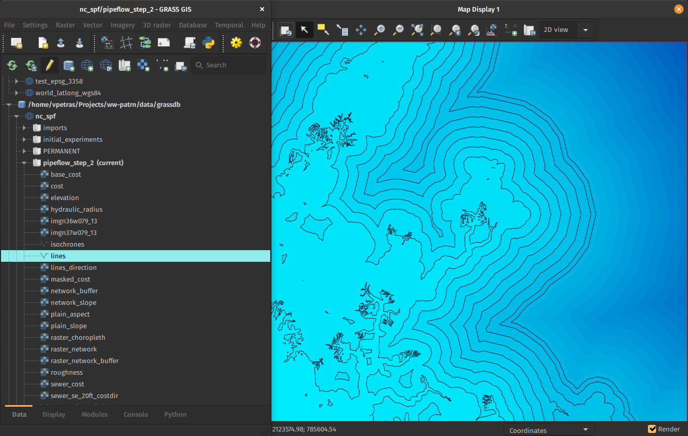
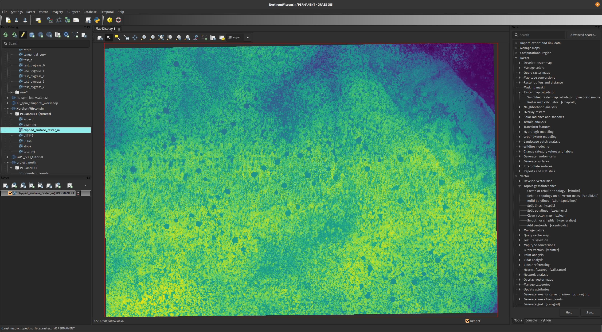
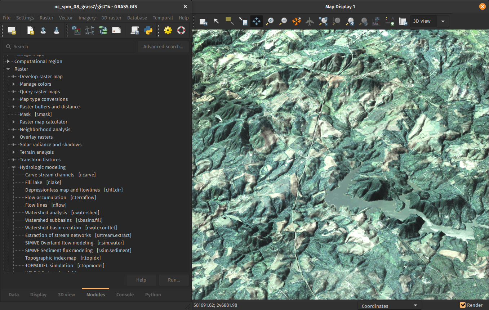

Tips and Tricks for GRASS GIS 8.2
NCSU GeoForAll Lab
at the
Center for Geospatial Analytics
NC State University

NCGIS, March 8-10, 2023
Vaclav (Vashek) Petras
- Geospatial Research Software Engineer at NC State
- BS & MS in Geoinformatics, Czech Technical University in Prague, Czechia
- PhD in Geospatial Analytics, NC State
- GRASS GIS: Development Team, Project Steering Committee
- OSGeo: Charter Member
Explore Both Addons and Core Tools
- Processing tools: 400+ in core, 400+ addons
- Content in each is directly driven by users
- All-in-one software suite

Pick Your Version
- 7.8.8 Legacy, Spring 2023 Mainatned legacy version
- 8.2.1 Current, January 2023 Current version
- 8.3.0 Current, Spring 2023 Upcomming current version
- 8.4.0 Preview, Daily Latest reviewed functional code
major.minor.micro – micro (x.y.z) brings fixes, minor (x.y) brings features, major (x) brings features and possibly backward incompatible changes

Forget the Startup Screen

Follow Startup Tips
Initial project sets up automatically and suggestions for next steps are provided.
Use Data Management
All data manipulation centered around revamped Data tab.
Single-Window GUI
Make use of of various panels
Opt-in preview in 8.2: Settings > Preferences > General
Use Python to Automate Workflows
Time-series visualization

Use Jupyter Notebooks
- Notebooks: Mix of text, code, results, images, …
- Usage: Prototyping, reproducibility, tutorials, …
- Now in GRASS GIS: Python functions for easy integration

Quick Web Maps
Web map with base maps, zooming, customizations, …

Integration with Jupyter Notebooks
3D visualization

Attach a Semantic Labels to rasters
-
(e.g.,
S2_1orred)- image classification can use sematic labels to identify bands
- different scenes can then be classified if semantic labels are the same
- organize bands within one spatio-temporal dataset
See the tool parameters for parallel support
- More tasks done in parallel in the same tool
nprocsspecifies number of cores (processes, threads)memoryspecifies RAM in MB
Check Tool Performance Documentation
r.neighbors: Cell value is a function of the cells around it. (parallel) Performance section in documentation describes the behavior

Links Data Instead of Importing
-
r.external can link (open) external raster data faster.
- 2-5× faster computation of min & max
- almost no time if min & max in metadata
- almost no time if min & max are not needed later
- Great for workflows when only portion of the data is processed in GRASS GIS.

Don't Limit Yourself to Desktop
- small VM, Raspberry Pi, old laptop
- Recipes for High Performance Computing setups
- HPC Clusters
- Reduced potential for race conditions
- Easier to create parallel workflows
Docker Containers
- Different flavours
- Built and updated automatically
- For all branches and tags
actinia
- REST API
- open source
- github.com/mundialis/actinia_core
Check for format- and dataset-specific imports
GDAL can do a lot, but i.sentinel, i.modis, i.landsat, r.in.usgs, r.in.nasadem, m.crawl.thredds, t.rast.import.netcdf, …
by Fondazione Edmund Mach, OpenGeoLabs, mundialis GSoC, NC State University, CONICET, Norwegian Institute for Nature Research, …
Get Support When Needed
- Community support
- Gitter chatroom (since 2022)
- user mailing list (with archive since 1991)
- GIS StackExchange
- GitHub Discussions
- GitHub Issues
- Commercial support
Get Things Done
- Individuals:
- Time: organize virtual community event, fix typos, …
-
Money: opencollective.com/grass
(new!)
- Single-Window Interfaces
- Time Series Interactive Visualization for Notebooks
- Organizations:
- Time: employee time
- Money: pay developers (companies) to add features or fix bugs
- Provider-independent, contractor-independent.
- Financial investments go to a public pool.
- Financial investments go to a public pool.

Lifetime license for current users in the audience and for everyone who asks a question.*
vpetras@ncsu.edu,
@vaclavpetras, @wenzeslaus
wenzeslaus.github.io/grass-gis-talks
*The GNU General Public License version 2.0 or higher terms and conditions apply.